CREATIVE PORTFOLIO
Decks & PresentationPortfolio.
Company profiles, pitch decks, and PowerPoint presentations.
Selected work
View all 69 projects ↗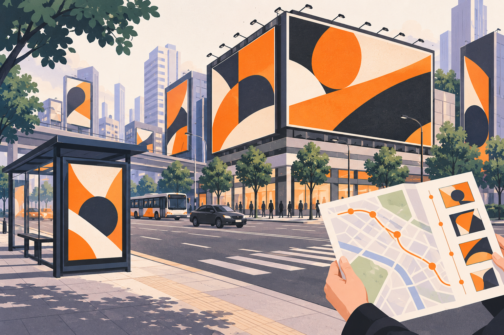
COMPANY PROFILE01 / 30 PAGES
Power Media — Company Profile ↗
An orange-and-black company profile combining brand introduction, outdoor advertising formats, location layouts, and a project overview.
View project →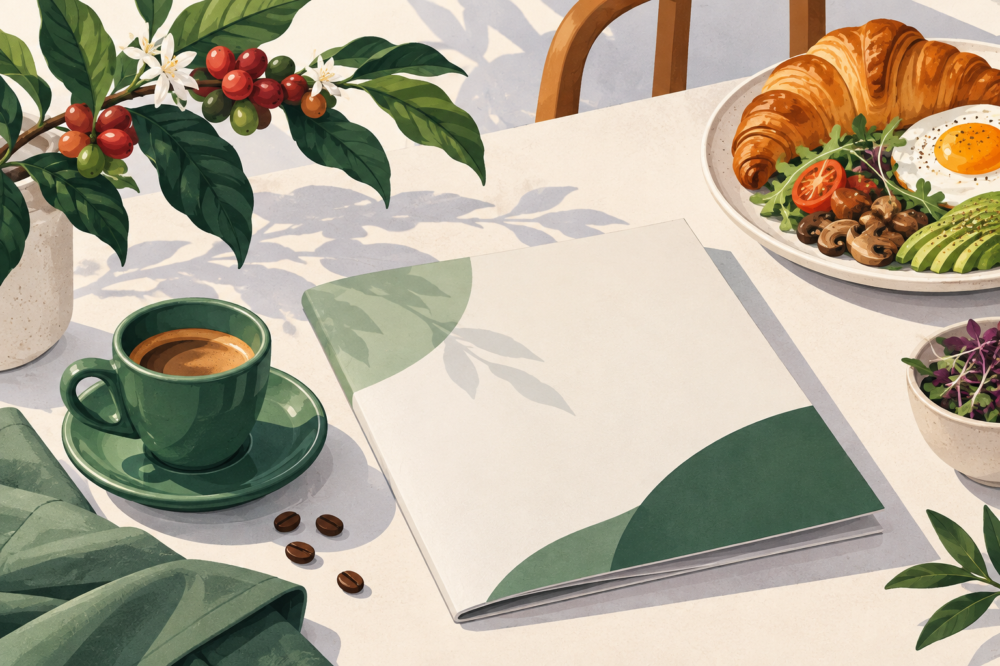
COMPANY PROFILE02 / 12 PAGES
33 Degree Cafe — Company Profile ↗
An editorial company profile for a specialty coffee and dining brand, using green accents, structured typography, and food imagery.
View project →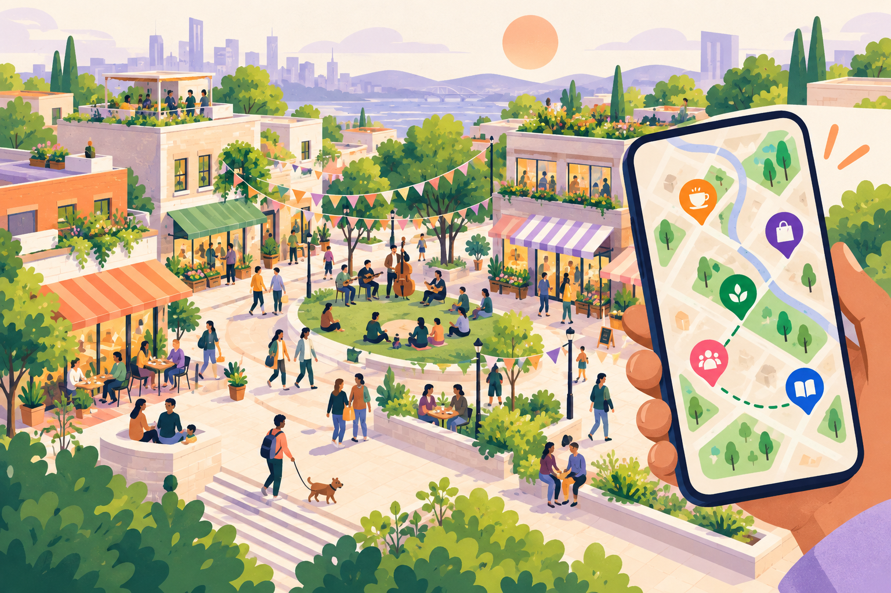
PARTNER PRESENTATION03 / 17 PAGES
2050 — Neighbourhood Partner Deck ↗
A neighbourhood-platform partner proposal using warm gradients, mobile product screens, user journeys, and event concept layouts.
View project →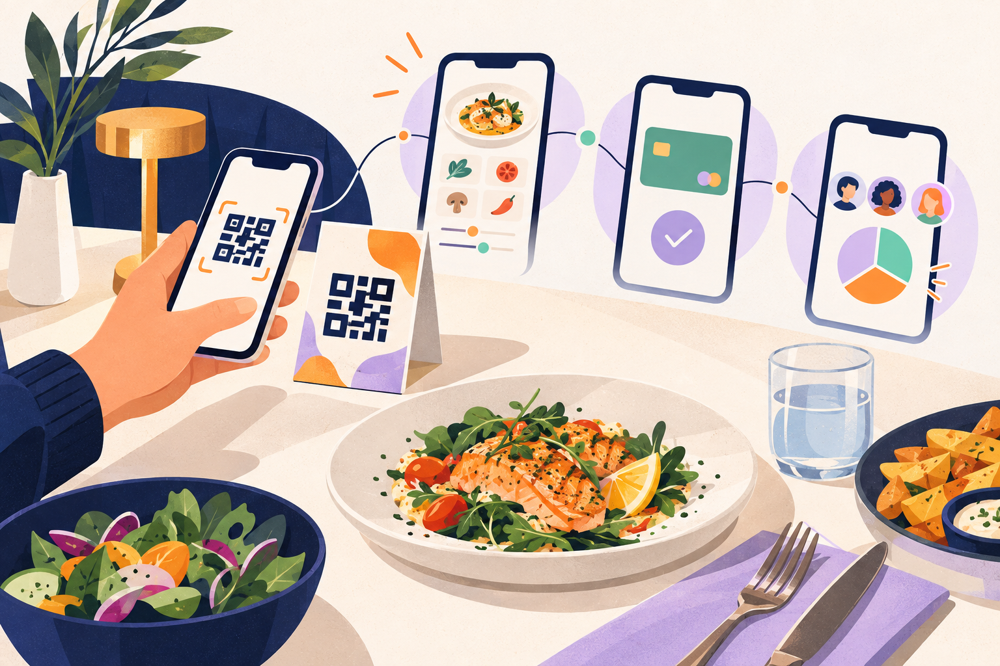
UI/UX & PRODUCT PRESENTATION04 / 7 PAGES
Network Dine — QR Ordering Journey ↗
A visual walkthrough of QR-based ordering, customization, payment, and bill splitting, presented through connected mobile interface screens.
View project →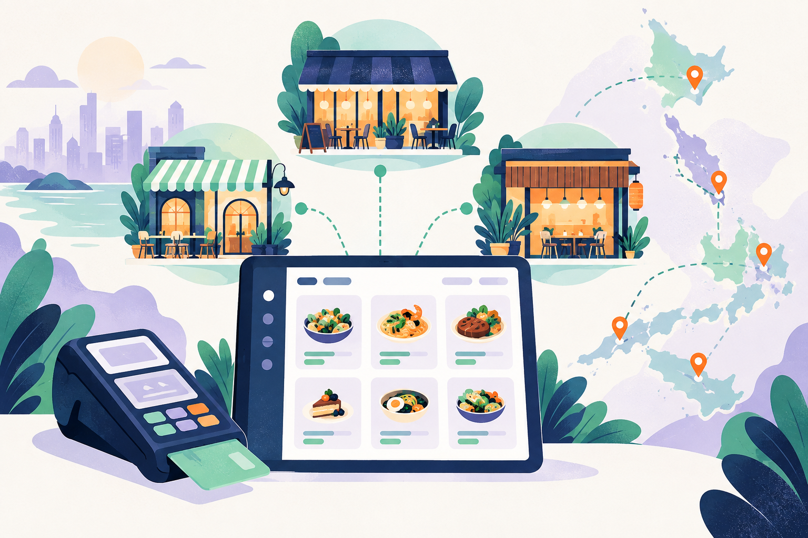
COMPANY PROFILE05 / 6 PAGES
Network Dine / eMenu — Company Profile ↗
A concise hospitality-platform profile combining product modules, platform visuals, payment integration, and regional presence.
View project →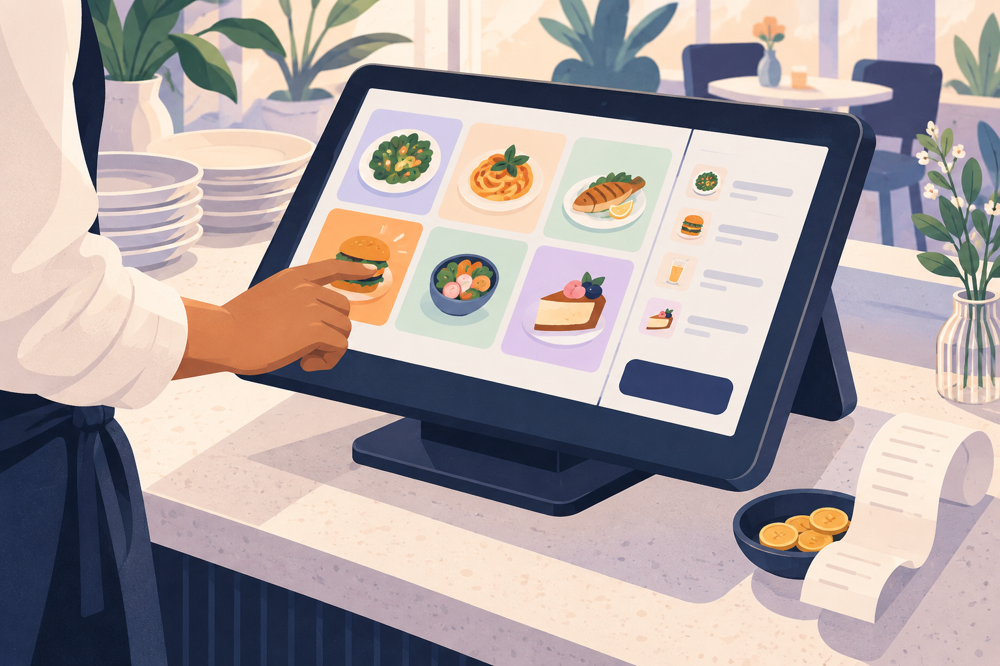
UI/UX & PRODUCT PRESENTATION06 / 8 PAGES
Network Dine — Terminal Experience ↗
A terminal interface walkthrough covering staff navigation, ordering, payments, tipping, and split-bill journeys.
View project →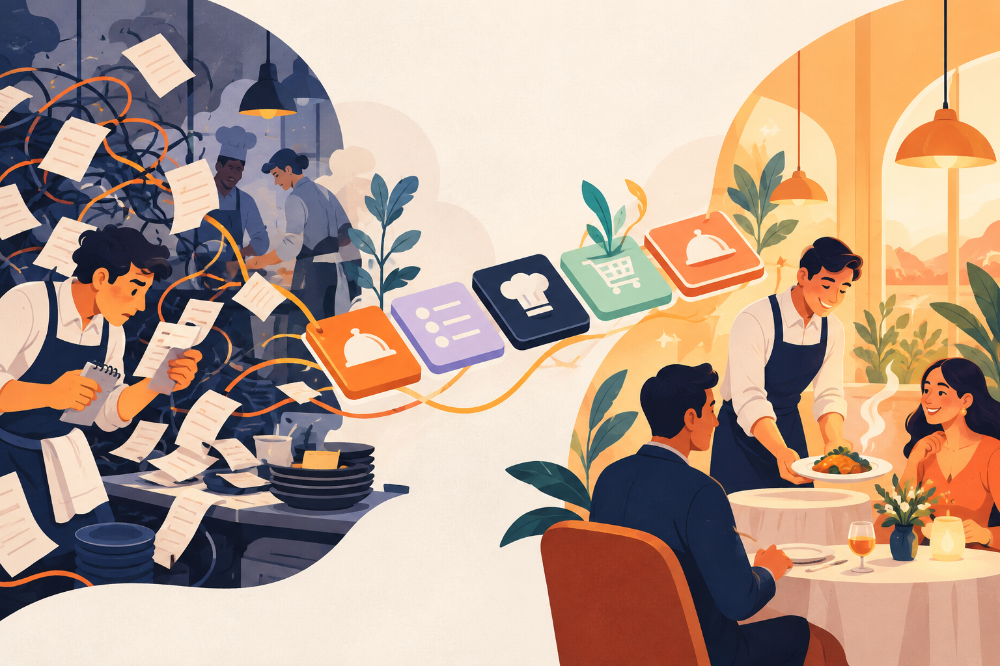
PITCH DECK07 / 16 PAGES
eMenu — Pitch Deck 3.0 ↗
A hospitality commerce pitch presentation that connects problem framing, platform architecture, product journeys, and commercial storytelling.
View project →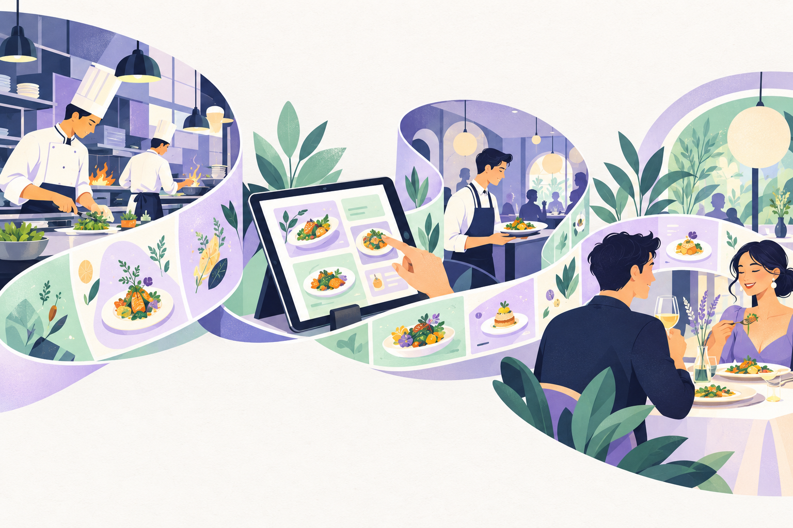
PITCH DECK08 / 28 PAGES
eMenu — Pitch Deck 1.0 ↗
A long-form hospitality platform presentation with product screens, service architecture, and a structured visual narrative.
View project →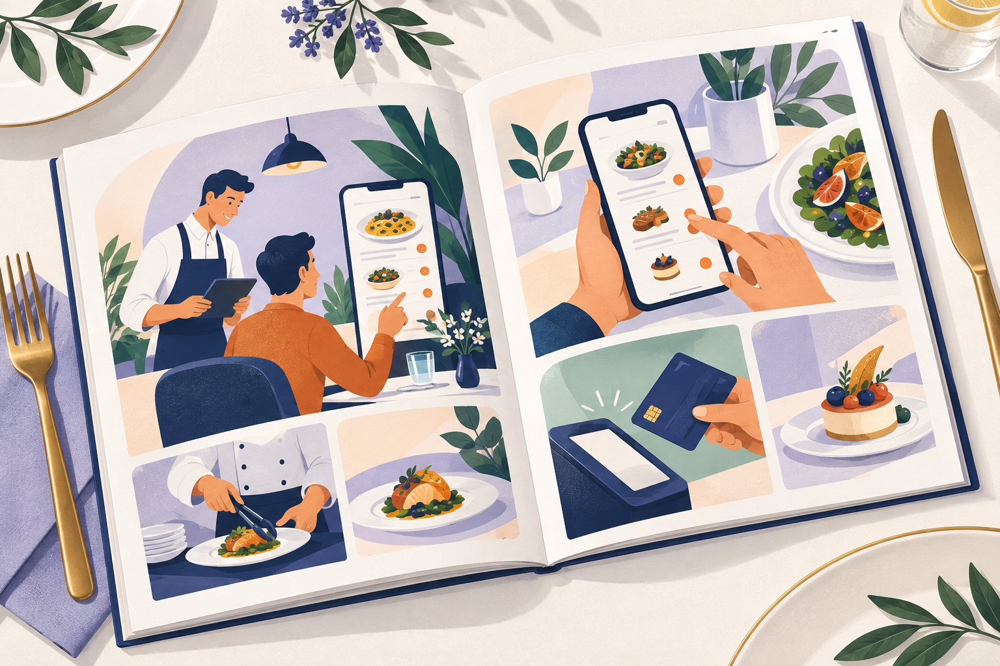
PRODUCT BROCHURE09 / 25 PAGES
eMenu — Product Brochure ↗
A digital hospitality brochure presenting ordering scenarios, payment flows, product capabilities, and interface examples.
View project →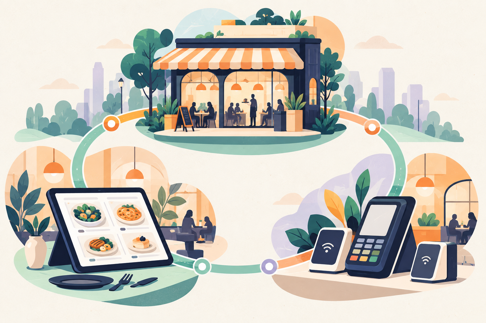
PITCH DECK10 / 16 PAGES
eMenu — Pitch Deck 2.0 ↗
A platform pitch deck combining a product timeline, hospitality ecosystem, payment partnership, and clear information layouts.
View project →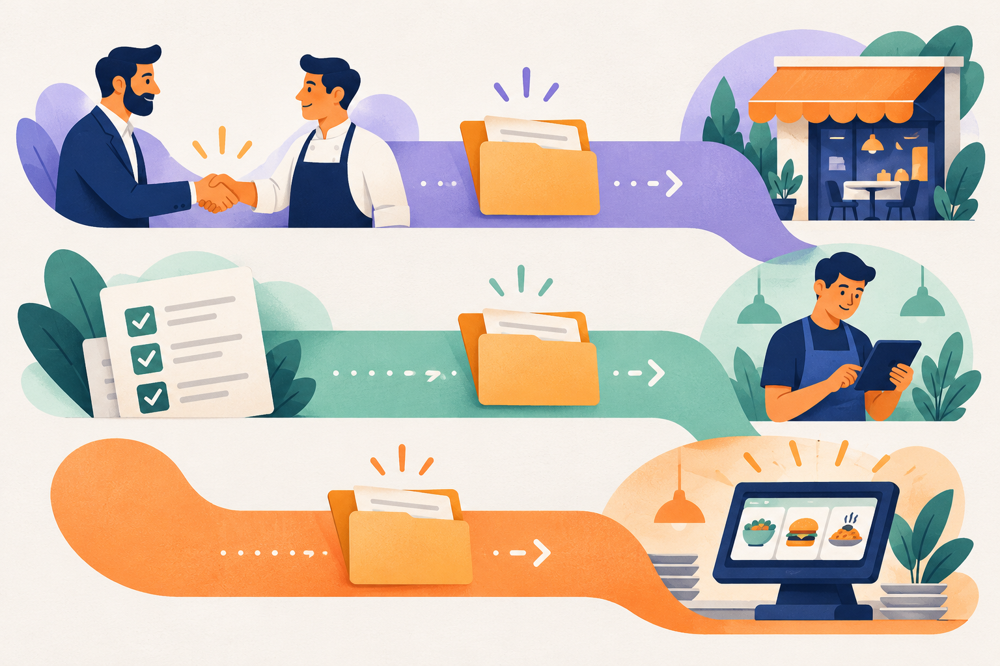
PROCESS PRESENTATION11 / 5 PAGES
Network International × eMenu — Workflows ↗
A compact workflow deck using swimlanes, stages, and color-coded handoffs to explain sales and onboarding processes.
View project →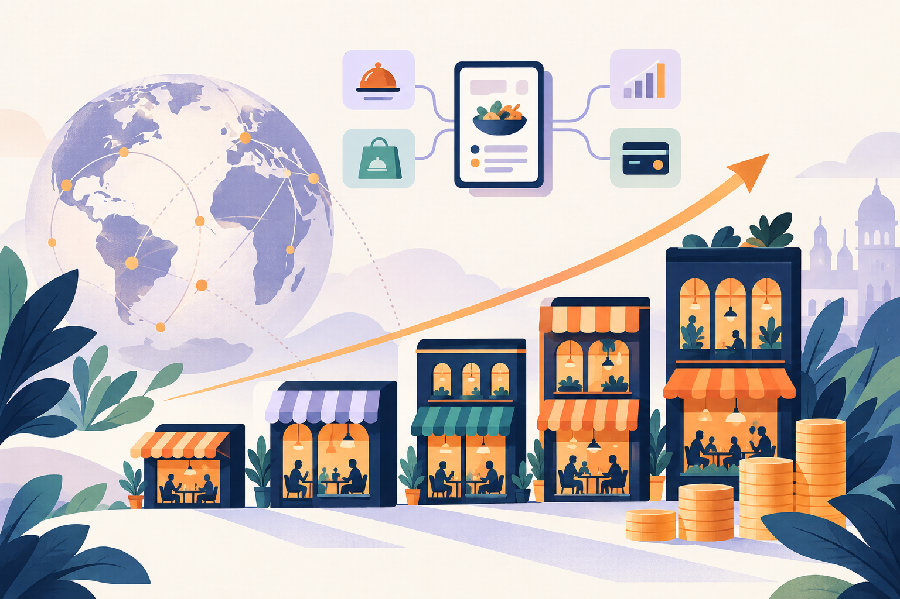
INVESTOR PRESENTATION12 / 38 PAGES
eMenu — Investor Deck ↗
An investor presentation organized around the platform story, product family, market context, and business-model visuals.
View project →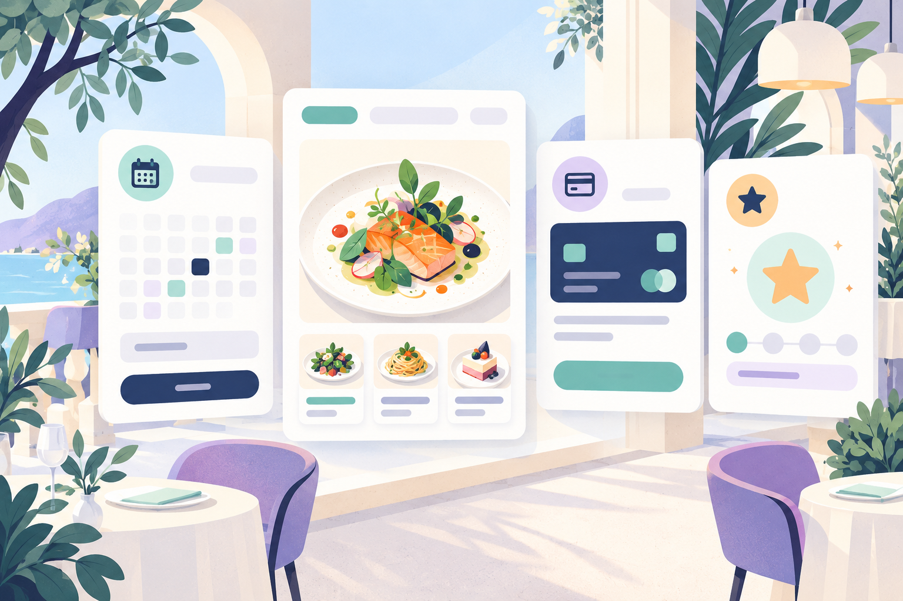
PRODUCT SUITE PRESENTATION13 / 27 PAGES
eMenu Suite — Light Theme ↗
A light-theme presentation of the hospitality product suite, featuring booking, menu, reservation, payment, and loyalty interfaces.
View project →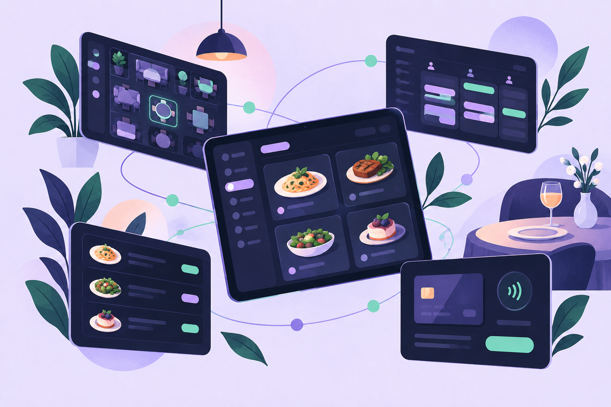
PRODUCT SUITE PRESENTATION14 / 27 PAGES
eMenu Suite — Dark Theme ↗
A dark-theme product presentation pairing illuminated visual accents with hospitality platform diagrams and interface showcases.
View project →LET’S CREATE SOMETHING
Have a project in mind?
Share your idea, scope, and timeline for a custom quote.